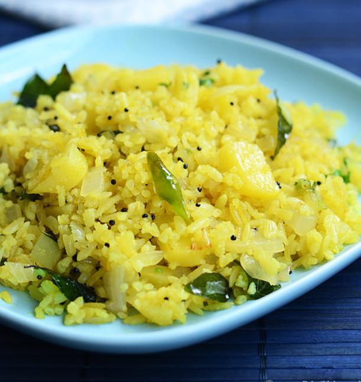

Poha

Poha, also known as pohe, aval, pauwa, sira, chira, chivda, or avalakki or baji, among many other names, is flattened rice originating from the Indian subcontinent. Rice is parboiled before flattening so that it can be consumed with very little to no cooking. These flakes of rice swell when added to liquid, whether hot or cold, as they absorb water, milk or any other liquids. The thickness of the flakes varies from almost translucently thin (the more expensive varieties) to nearly four times thinner than a normal rice grain.
This easily digestible form of raw rice is very popular across India, Nepal and Bangladesh, and is normally used to prepare snacks or light and easy fast food in a variety of Indian cuisine styles, some even for long-term consumption of a week or more.
Why is my poha dry?
Give more standing time (soaking time). After you wash the poha, keep aside for minimum 15 minutes.
Still if you find it dry, you can sprinkle water and give 10 mins more resting time.
You c an also cook with a bowl of water kept inside and cook covered.
How poha stay soft for long time?
More moist poha stays soft for long time. So again give more resting time with little more water added while it is soaking.
If you do not give enough resting time after washing poha, as it cooks and cools down later it becomes dry.
Soaking time for poha is minimum 15 minutes.Poha is considered to be healthy or not depending upon what you are comparing.
It is healthier than processed white rice, maida and other such refined or processed ingredients used for preparing food.
Ingredients
- 1 cup Poha/ flattened rice thick variety
- 2 Onion
- 3 Green chilli
- 1 Potato Optional
- ⅛ teaspoon Turmeric
- ½ teaspoon Sugar
- 1 teaspoon Lemon juice
- 3 tablespoon Coriander leaves chopped
- Salt
To Temper
- 2 tablespoon Oil
- ½ teaspoon Mustard
- 1 teaspoon Cumin seeds/li>
- 1 Asafoetida generous pinch
- 3 tablespoon Peanut roasted
- 1 Curry leaves sprig
Steps
- Wash poha thoroughly 2-3 times. Drain water and immediately mix turmeric, salt and keep aside.
- Mean while you can do the chopping work. I microwaved it to cook. You can choose your own option. If microwaving, cook covered without adding any water for a minute or two in high. Or you can add along onion and cook covered in pan itself. Adding potato is optional..
- Heat a pan with oil and splutter mustard, add cumin seeds, peanuts. Give it a quick stir. Add asafoetida and curry leaves. In goes onion, green chillies and fry till onion just transparent. Add sugar and give it a stir.
- Add boiled potato with a sprinkle of salt and fry for a minute. Add poha and mix well.
- Pat it gently to pack it and cook covered in medium flame for 2-3 minutes. Lastly add coriander leaves and lemon juice. Mix well.